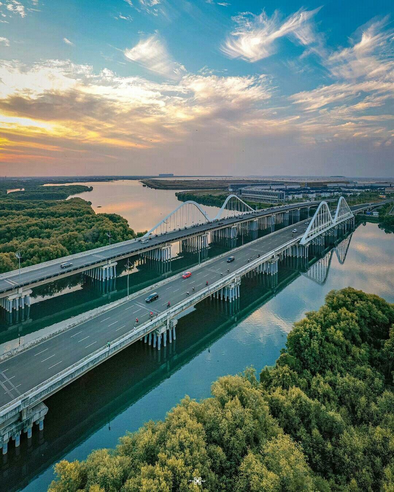
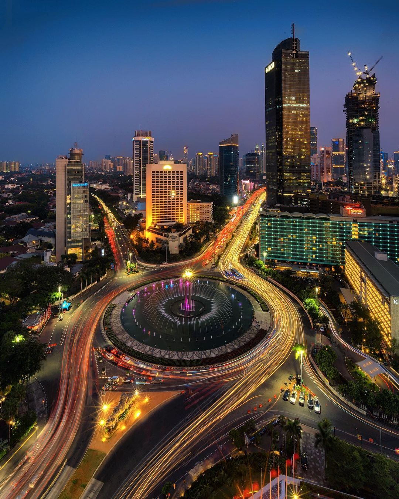
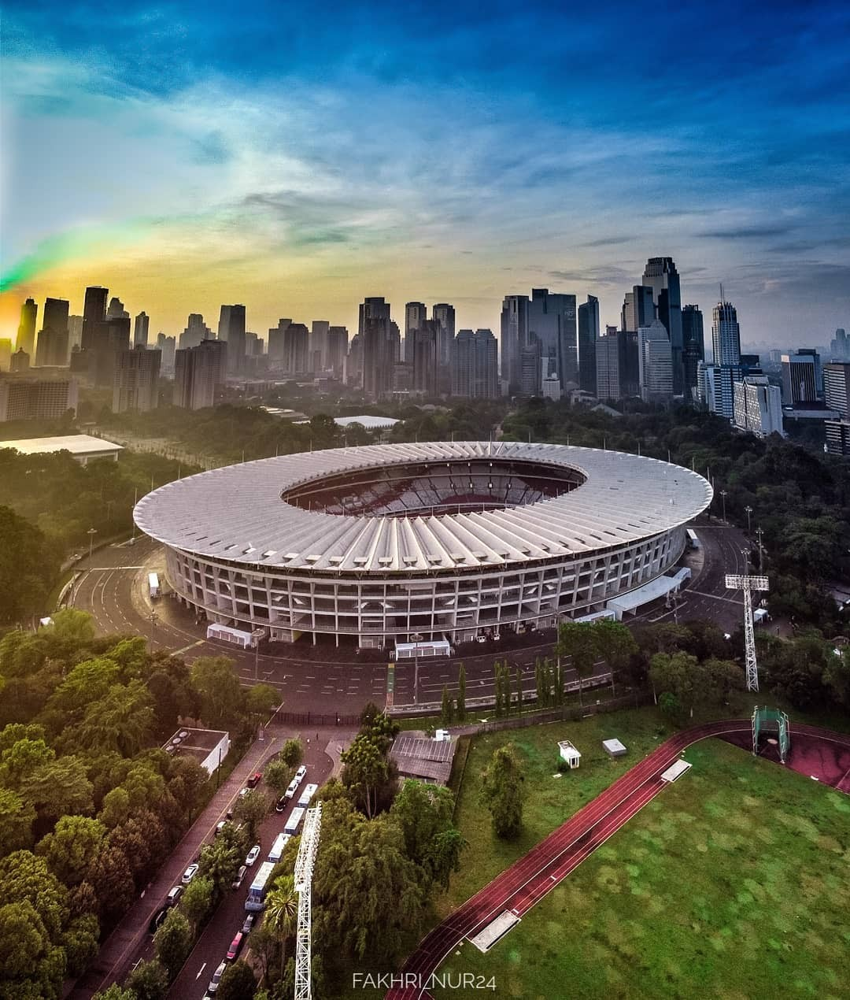
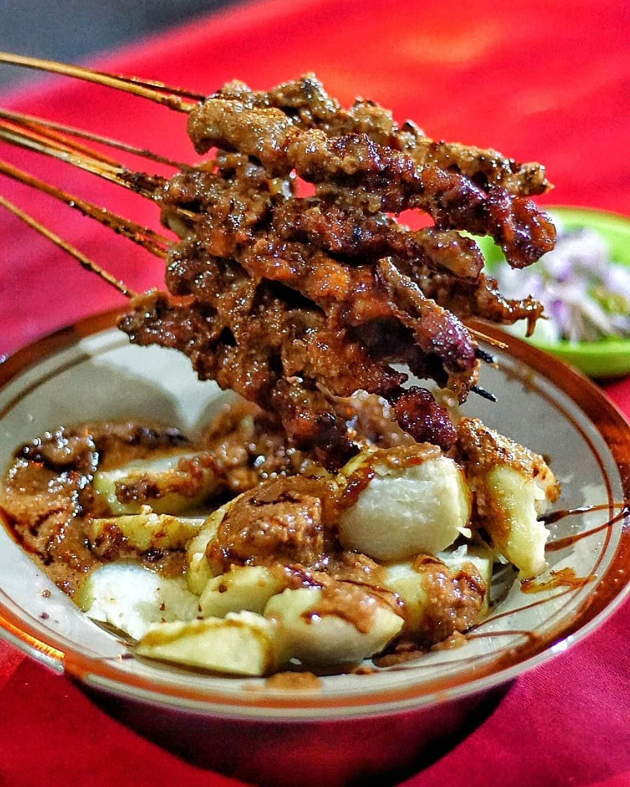
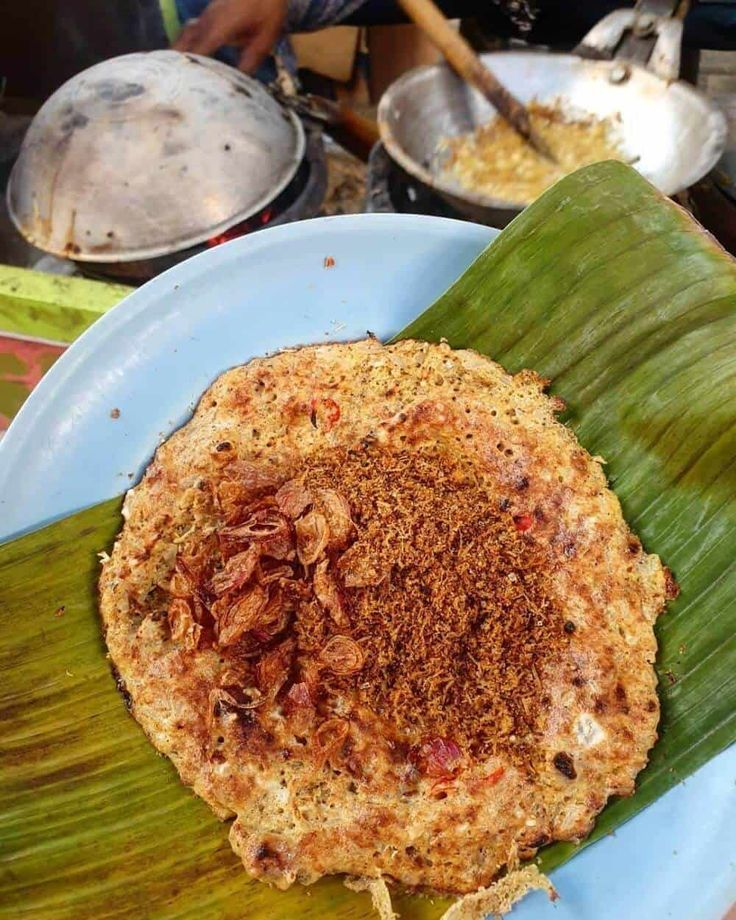
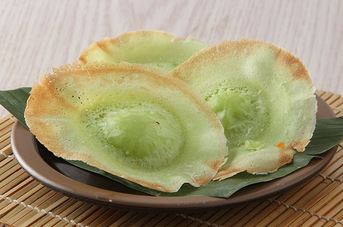

Discover the Hidden Gems of My Hometown – A Journey into Unseen Traditions and Timeless Wonders! Explore
Step Into Wonder – 3 Iconic Places to Explore Now!
More
Discover Jakarta Through My Eyes
I was born and raised in the heart of Jakarta, a city rich in culture, history, and
endless surprises. This is your gateway to explore the hidden gems and vibrant wonders that make Jakarta
truly unforgettable!

Discover the most attractive places

Bundaran HI
The iconic heart of Jakarta, where modern skyscrapers, bustling streets, and the famous fountain create a vibrant mix of tradition and city life.
Monas
The towering symbol of Jakarta's independence, stands proud as a beacon of history and culture, offering stunning views and a deep dive into Indonesia's rich heritage.

Gelora Bung Karno
Jakarta's iconic stadium, where epic moments and electric energy bring sports and national pride to life.
Flavors of Jakarta Dive into Jakarta's Culinary Wonderland - Where Every Bite Tells a Story!

Sate Apjay
Since 1971, Sate Apjay has been serving up legendary chicken skewers, dripping in bold, rich peanut sauce, and so tender they melt in your mouth – a true Jakarta icon!
10:00 - 23:00
Pangliman Polim, South Jakarta
(1K reviews)

Kerak Telor
Kerak Telor, created in the 1920s by the Betawi community of Menteng, Jakarta, is a crispy, savory egg pancake made with sticky rice and rich spices. Born from an abundance of coconuts in the area, this iconic dish showcases the creativity of Betawi cuisine, offering a delicious bite of history and tradition!
06:00 - 16:00
Monas, Central Jakarta
(3K reviews)

Kue Ape
Kue Ape, Jakarta’s street food favorite, is a delightful mix of textures with a pillowy soft center and irresistibly crispy edges – a bite-sized pancake experience you can’t miss!
09:00 - 17:00
Pasar Mayestik, South Jakarta
(900 reviews)
Step Into Wonder – 3 Iconic Places to Explore Now!
Ready for a journey filled with fun, culture, and unforgettable moments? These five iconic Jakarta attractions are your ultimate passport to adventure! From the exhilarating vibe of the city’s bustling center to the quirky hidden gems only locals know, each spot is packed with photo-worthy views, rich history, and fun attractions. Whether you're looking to ride the waves of Jakarta’s energy or dive into its peaceful corners, this adventure promises non-stop excitement. Grab your camera, your curiosity, and let’s explore the fun side of Jakarta!
Get ready for an adventure at PIK! Start in Patjoran with its stunning Chinese-style buildings and authentic cuisine. Then, relax on the white sand beach or take in San Antonio's seaside views while jogging or cycling along the coast. Whether it’s food, fun, or scenic escapes, PIK has it all!
Sea World Ancol is more than an aquarium—it’s an ocean adventure! With over 18,000 aquatic creatures, thrilling feeding shows, touch pools, and rare finds like the ancient Coelacanth, it’s the ultimate family destination for fun, learning, and marine conservation. Dive into the magic!
Nicknamed "Gedung Gajah" for its iconic bronze elephant statue from Thailand’s King in 1871, the National Museum is a gateway to Indonesia’s rich history. Filled with ancient statues, artifacts, and relics, it’s a must-visit for anyone eager to explore the nation's cultural heritage.